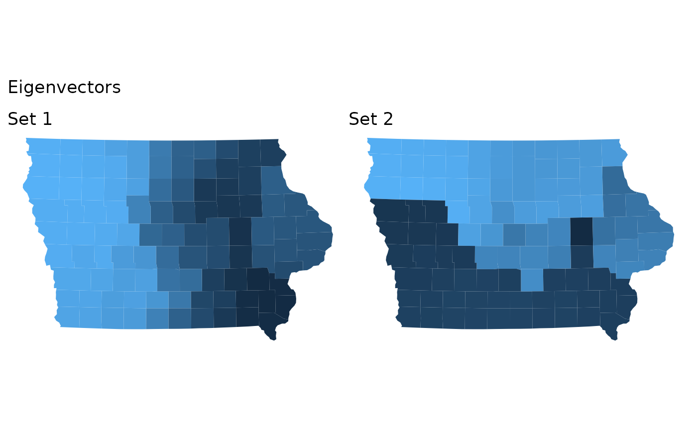

This function provides one way to identify the structural differences between two sets of redistricting plans. It operates by computing the precinct co-occurrence matrix (a symmetric matrix where the i,j-th entry is the fraction of plans where precinct i and j are in the same district) for each set, and then computing the first eigenvalue of the difference in these two matrices (in each direction). These eigenvalues identify the important parts of the map.
Usage
compare_plans(
plans,
set1,
set2,
shp = NULL,
plot = "fill",
thresh = 0.1,
labs = c("Set 1", "Set 2"),
ncores = 1
)Arguments
- plans
a redist_plans object
- set1
<data-masking>indexing vectors for the plan draws to compare. Alternatively, a second redist_plans object to compare to.- set2
<data-masking>indexing vectors for the plan draws to compare. Must be mutually exclusive withset1.- shp
a shapefile for plotting.
- plot
If
plot="line", display a plot for each set showing the set of boundaries which most distinguish it from the other set (the squared differences in the eigenvector values across the boundary). Ifplot="fill", plot the eigenvector for each set as a choropleth. Ifplot = 'adj', plot the shows the adjacency graph edges which most distinguish it from the other set. The adj option is a different graphical option of the same information as the line option. See below for more information. Set toFALSEto disable plotting (or leave outshp).- thresh
the value to threshold the eigenvector at in determining the relevant set of precincts for comparison.
- labs
the names of the panels in the plot.
- ncores
the number of parallel cores to use.
Value
If possible, makes a comparison plot according to plot. Otherwise
returns the following list:
- eigen1
A numeric vector containing the first eigenvector of
p1 - p2, wherep1andp2are the co-occurrence matrices forset1andset2, respectively.- eigen2
A numeric vector containing the first eigenvector of
p2 - p1, wherep1andp2are the co-occurrence matrices forset1andset2, respectively.- group_1a, group_1b
Lists of precincts. Compared to
set2, in theset1plans these precincts were much more likely to be in separate districts. Computed by thresholdingeigen1atthresh.- group_2a, group_2b
Lists of precincts. Compared to
set1, in theset2plans these precincts were much more likely to be in separate districts. Computed by thresholdingeigen2atthresh.- cooccur_sep_1
The difference in the average co-occurrence of precincts in
group_1aandgroup_1bbetweenset2andset1. Higher indicates better separation.- cooccur_sep_2
The difference in the average co-occurrence of precincts in
group_2aandgroup_2bbetweenset1andset2. Higher indicates better separation.
Details
The co-occurrence matrices are regularized with a \(Beta(1/ndists, 1-1/ndists)\)
prior, which is useful for when either set1 or set2 is small.
Examples
data(iowa)
iowa_map <- redist_map(iowa, ndists = 4, pop_tol = 0.05)
plans1 <- redist_smc(iowa_map, 100, silent = TRUE)
plans2 <- redist_mergesplit(iowa_map, 200, warmup = 100, silent = TRUE)
compare_plans(plans1, plans2, shp = iowa_map)

compare_plans(plans2, as.integer(draw) <= 20,
as.integer(draw) > 20, shp = iowa_map, plot = "line")